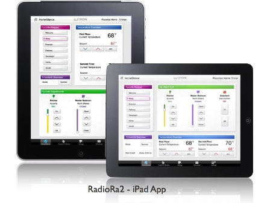

Sistemas de control de iluminación y ahorro de energía
Es importante que usted sepa que la iluminación esta sufriendo una gran transformación y hoy en día existen diversas tecnologías como la iluminación LED y los bombillos ahorradores que han ido reemplazando los bombillos incandescentes. El control de iluminación ósea la posibilidad de regular la cantidad de luz de uno o varios espacios ha sufrido una gran transformación y se ha vuelto un campo especializado con mas de 18.000 productos disponibles para ello. Lo invitamos a leer una breve descripción del avance de la iluminación y sus métodos de control
1880: Nace el bombillo
Desde 1880, la humanidad ha podido disfrutar la iluminación generada a partir de la electricidad. Junto con el nacimiento del bombillo se generaron los interruptores, equipos.
1964: Nace el atenuador
En 1964 Joe Spira fundador de Lutron, presenta el primer sistema de atenuación, el dimmer Lutron Capri. Pasaron casi 84 años para que la humanidad pudiera ajustar el nivel de luz.
En Abril 29 de 2011, el Smithsonian's National Museum of American History en Washington agrego a su colección de sistemas eléctricos el trabajo del señor Spira y hoy puede admirarse al lado de otros productos históricos como los trabajos de Thomas Alba Eddison.
En la actualidad existen mas de 18.000 productos para el control de iluminación, sin embargo muchos hogares Colombianos desconocen que la iluminación puede ajustarse y usan interruptores como si vivieran en el siglo Antepasado
Ver historia del control de iluminación1970: Nace el bombillo ahorrador
Nuevas tecnologías de iluminación, como el bombillo ahorrador que producían la misma cantidad de luz consumiendo menor energía se desarrollaron hacia principios de los 70 y comenzaron a ser usadas ampliamente en edificios de oficinas. Hoy en día la mayoría de países tienen regulaciones que limitan el uso de tecnologías antiguas como el bombillo incandescente tanto en sus zonas de uso como en en el consumo máximo.
Hoy en día existen bombillo ahorradores que también pueden ser atenuados usando dimmers diseñados para ello.
2017: Bombillos LED abarcan el mercado
Se estima que para el año 2017, los bombillos basados en tecnología LED abarcaran cerca del 95% del mercado de bombillos.
Tanto los bombillo LED como los ahorradores utilizan "transformadores electrónicos" que se encargan de encender y regular su funcionamiento. Esto ha obligado a desarrollar nuevas tecnicas para atenuar dichos bombillos
Nuevas tecnologías: el reto de la atenuación.
Si bien existen cientos de atenuadores para bombillos incandescentes, estos no sirven para atenuar las nuevas tecnologías ahorradoras.
La atenuación de estas nuevas tecnologías enfrenta dos retos: la baja carga de estos bombillos: 5 watts en adelante y el tipo de transformador: electrónico.
Todos los dimmer disponibles en el mercado tienen una ficha técnica donde indica la carga mínima que puede manejar y el tipo de tecnología para la que fue diseñado.
Leer mas sobre nuevas tecnologías y el reto de atenuación.El bombillo es solo parte de la solución
Si hablamos de ahorro, el bombillo es solo parte de la solución. Un ambiente que este pobremente iluminado es tan perjudicial como un ambiente sobre iluminado. Por esto la atenuación es parte fundamental de un sistema correcto de iluminación.
Cada actividad requiere un nivel de luz, leer y ver televisión son actividades que requieren diferentes niveles por ejemplo.
La atenuación sirve además para ahorrar energía y extender la vida útil del bombillo.
Tecnologías para control de iluminación y ahorro de energía
Hoy en día es posible ajustar el nivel de iluminación de una o varias zonas de la casa, bien sea un equipo fijo en la pared, un control remoto, incluso desde un tablet o un teléfono celular.
Atenuador de pared
Existen atenuadores análogos y digitales que reemplazan los interruptores. Estos atenuadores pueden ser encendidos desde el otro lado de la habitación usando un conmutable cableado o uno de los nuevos conmutables inalámbricos. Lutron tiene diferentes modelos de atenuadores para atenuar todo tipo de iluminación: incandescente, halógena, fluorescente y LED.
Hay modelos disponibles que pueden ser usados en sistemas de control de toda la casa para generar encendidos y apagados programados o en respuesta a ocupación del área.
Estilo moderno
Diseñados en colores sobrios y completamente digitales, este nuevo tipo de atenuadores VIERTI recibió premio de diseño.
El uso de atenuadores ahorra mas de un 10% de la energía usada en iluminación.
Atenuador para lámparas
Disponible en modelos análogos y digitales, permite controlar el nivel de luz de las lámparas.
Un nuevo modelo permite el control usando un control remoto "pico" facilitando el manejo de lámparas de difícil acceso.
Este tipo de atenuadores para lámpara también esta disponible para sistemas de control de todo el hogar y pueden ser programados para encendidos y apagados de acuerdo con un horario.
Sensor de ocupación incorporado
En pequeños espacios como cuartos de ropas, bodegas, cuartos de linos y baños sociales se usan interruptores y atenuadores con sensor de ocupación. Este sensor se encarga de apagar la luz si el espacio queda desocupado y puede ser programado para encenderla de forma automática cuando ingresa una persona.
Los equipos usan una tecnología patentada que evita tener que mover la mano para evitar que el sensor se apague.
Sensor de ocupación de techo
En áreas de mayor tamaño se usan sensores de techo cableados o inalámbricos.
Los sensores inalámbricos funcionan con baterías y "hablan" inalámbricamente con los interruptores para apagarlos cuando el área se desocupa.
Este tipo de sensor es muy usado en cocinas, habitaciones y corredores.
Sensor de ocupación para corredor
Disponibles en modelos cableados e inalámbricos. Su diseño permite detectar movimiento en corredores hasta de 30 metros. Los modelos inalámbricos se comunican con interruptores ubicados en los extremos de los pasillos, facilitando la "automatización" de sistemas instalados hace varios años.
El uso de sensores de ocupación ahorra un 15% del consumo de energía por iluminacion.
Ajustes del sensor
Los sensores se pueden ajustar fácilmente de acuerdo con el área. Oprimiendo un botón, es posible determinar el tiempo que debe permanecer el área desocupada, ajustar cuando se enciende la luz y la sensibilidad. Las baterías duran de 3 a 5 años y se consiguen fácilmente.
Sensor de luz día
Este tipo de sensor cableado e inalámbrico se encarga de ajustar la iluminación de acuerdo con las condiciones de luz solar que se recibe por las ventanas.
El sensor inalámbrico se comunica con los atenuadores ajustando su nivel. El uso de sensores de luz día puede ahorrar hasta un 20% de la energía utilizada en iluminación.
Control de varios interruptores de una misma zona
En zonas donde existen varios interruptores que a su vez controlan varias zonas de luz, como el caso de sala-comedor, salas de juntas y auditorios, se usan sistemas que permiten controlar cada zona de forma individual o mejor aun, de forma conjunta, es decir que al toque de un botón podemos lograr que se enciendan las diferentes luces en determinados niveles o apagarlas todas al toque de un botón.
Estos sistemas disponibles reemplazar 3,4 y 6 interruptores, pueden además comunicarse con los sensores de luz día, de ocupación, controles pico y cortinas Lutron.
Control de toda la vivienda
Es posible controlar todas las luces de una casa u oficina, de forma sencilla y sin necesidad de obra civil. Para esto podemos reemplazar los interruptores normales con unos interruptores digitales que se comunican entre si de forma inalámbrica y pueden ser controlados desde controles de pared y de mesa tipo Botonera, así como equipos iPod, iPad, Android.
En viviendas nuevas podemos "esconder" los interruptores usando módulos a los que conectamos los bombillos y únicamente usamos botoneras de pared logrando la mayor limpieza visual. Usando tecnología inalámbrica podemos controlar mas de 1000 interruptores !!. Descargar sistema de control
Tecnología inalámbrica para hogares nuevos o construidos
Conozca como automatizar la iluminación de su vivienda de forma sencilla con nuestra nueva tecnología inalámbrica.
Control desde su vehiculo
Encienda la luces y controle su puerta de garaje desde un cómodo control que puede colocar en el parasol de su vehiculo. Varios carros? no hay problema. hasta 10 controles pueden ser instalados.
Control de electrodomesticos
Usando los módulos inalámbricos evita el consumo de energía vampira que puede representar hasta un 10& de la factura de energía. Este modulo también puede usarlo para encender bombas de agua, luces de navidad, riegos y cualquier otro equipo eléctrico.
Múltiples formas de control
El sistema puede ser controlado usando aplicaciones gratuitas para iPod, iPad, Android o integrarse para ser controlado desde una pantalla de pared o control remoto inalámbrico.
iPad controlando luces
Si tiene un iPad, Android, iPod, ya tiene el control remoto.
Modo vacaciones
El sistema se integra con nuestro sistema de seguridad para encender las luces en caso de que se active la alarma. Tambien puede ser programado en modo de vacaciones para que encienda y apague las luces y controle las cortinas Lutron despistando los ladrones.
Ejemplo
Un apartamento puede ser fácilmente "automatizado", instalando un sistema como este que podrá ampliar a otras áreas de la habitación y e integrar con cortinas motorizadas Lutron.